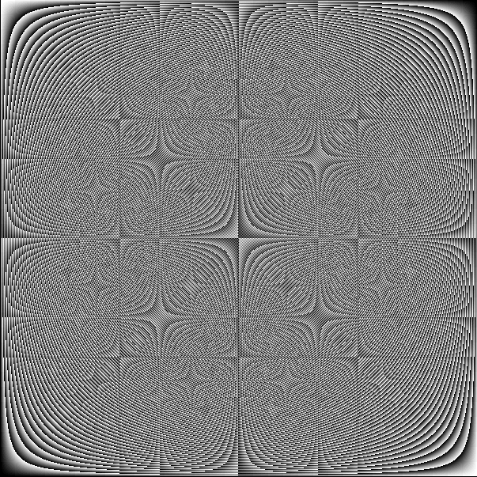

Grauwerte und Multiplikation modulo p
Zuweilen offenbaren andere Darstellungsmethoden neue Zusammenhänge.
Hier werden die Zahlen der Multiplikationsgruppentafel modulo p durch Grauwerte ersetzt.
(0 ist schwarz, p ist weiß). Es treten geometrische Strukturen auf, die Einsicht in das Teilerverhalten der
Zahlen geben.
Die folgende Grafik zeigt ein nach dem gleichen Verfahren hergestelltes Bild für p=604.
